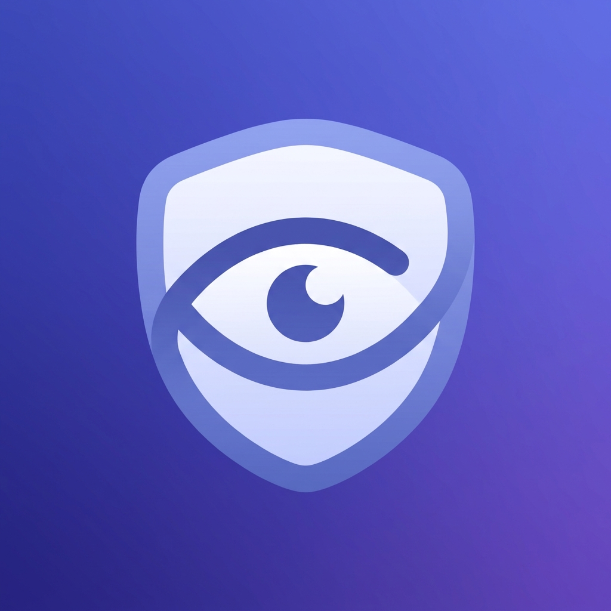

「スマホ見張り」は、スマホを「自分専用の試験監督」に変える勉強集中タイマーです。机に立てたiPhoneのフロントカメラが、集中セッション中のあなたの視線だけをそっと見張ります。教科書やノートに向かっている間は集中時間が静かに積み上がり、スマホをチラ見した瞬間——画面が真っ赤になり、振動でバレます。「スマホを見なかった時間」がそのまま記録になる、逆転の発想の集中タイマーです。
対応機種：Face ID搭載のiPhone（視線の判定にTrueDepthカメラを使用します）
集中セッション（回数無制限）とその日の結果表示は無料です。買い切りのProアップグレードで、全履歴・週/月の合計・連続日数ストリーク・誘惑ヒートマップ（弱点時間帯の可視化）・勉強記録の共有/書き出しが解放されます。
ご質問・ご要望・不具合報告は、お問い合わせフォームよりお寄せください。
Mihari turns your phone into your own exam proctor for study sessions. Prop your iPhone's front camera on your desk, and during a focus session it quietly watches only your gaze. While you're looking at your textbook, your focus time keeps quietly building up — the moment you glance at your phone, the screen flashes red and buzzes. It's a focus timer built on a reversal: what gets recorded is the time you didn't look at your phone.
Requires an iPhone with Face ID (uses the TrueDepth camera for gaze detection).
A timer that catches you looking · The screen dims to cut battery use and temptation · Unlimited free sessions every day · An instant summary of focus time, glances, and your longest streak.
Focus sessions (unlimited) and same-day results are free. A one-time Pro upgrade unlocks full history, weekly/monthly totals, streaks, a temptation heatmap of your weak hours, and sharing/export of your study record.
The app collects no personal data. Camera video is used only on-device to detect whether your gaze is on the screen during a focus session — it is never recorded, saved, or transmitted. The app works fully offline. See the Privacy Policy.